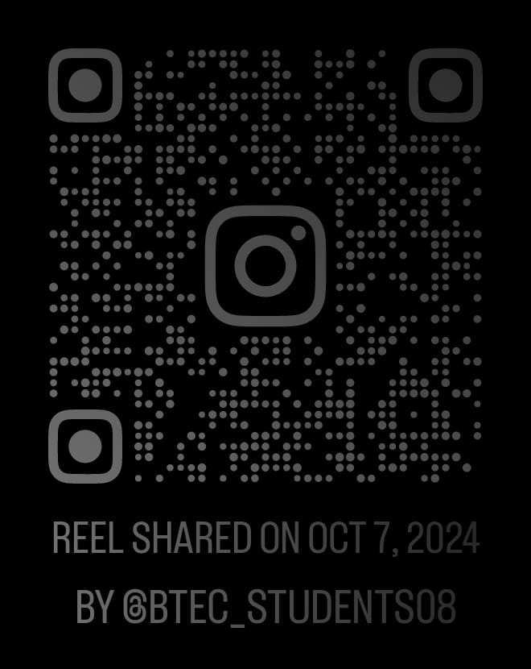

Ms Hadeel, one of the first teachers who taught BTEC students during
its inaugural year in Jordanian secondary schools, talks about how
she developed through the training courses she took to teach girls
in this system
- Teachers' opinion
Mr. Shadi, also one of the first teachers to teach BTEC students,
offers courses at his center and talks about the increasing interest
of students in these courses after the system BTEC opened their eyes
to their importance. He also discusses the noticeable improvement in
his students' skills
- Students' opinion
Here are the opinions of some 10th-grade female students specializing
in Information Technology at Zubaydah Bint Al-Harith Secondary School.
They talk about how the specialization helped them develop their
digital skills and share their experience with the system

- Students' opinion
Students of Business Administration talked about their satisfaction
with the fact that the study system in * includes practical
application, which allowed them to test their understanding of the
subjects and identify their strengths and weaknesses, enabling them to
further develop their skills. They also expressed their appreciation
for the system's combination of theoretical study and practical
application
Your opinion matters
Share your thoughts with us and let us know your questions on our social
media platforms ( right here )! We're here
to hear from you and can’t wait to interact with all of you!